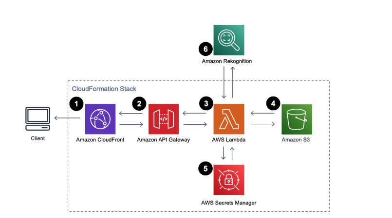
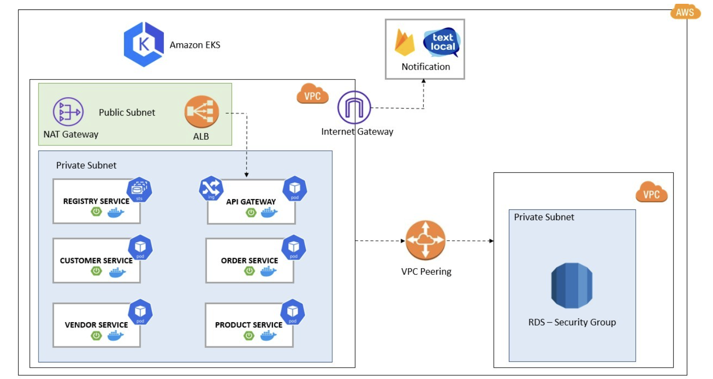
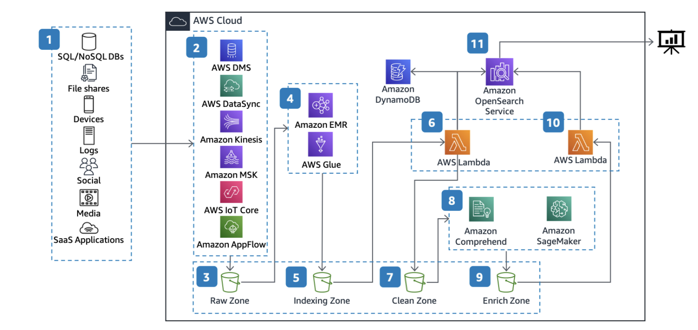
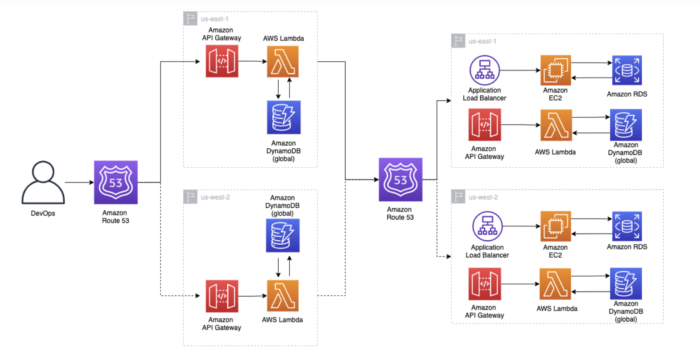

Serverless architecture
無伺服器架構
Event-driven applications that scale on their own. The right shape for a cloud-native product where nobody wants to manage a server.
View the code
Everything you can imagine in cloud architecture, AWS can do. Four of those architectures, drawn and then built, with the CDK code that stands each one up.
Each drawing has a repository behind it. The pictures are grey until you touch them.
無伺服器架構
Event-driven applications that scale on their own. The right shape for a cloud-native product where nobody wants to manage a server.
View the code
容器化微服務
Container-based architecture on Kubernetes. Independent services that can be developed, deployed and scaled separately.
View the code
現代數據湖
A modern data architecture with real-time streaming and analytics on top, processing big data with machine learning wired in at scale.
View the code
多區域高可用
A disaster-resilient architecture spanning several AWS regions, with automated failover and global load balancing for maximum uptime.
View the code
The parts of AWS I have run in production, and the services in each that I reach for.
Six pieces that turn a trained model into something that answers requests, on AWS.
Distributed training pipelines with automatic scaling and optimisation.
GPU-accelerated compute clusters with intelligent resource allocation.
Real-time inference endpoints with A/B testing and monitoring.
High-performance embedding storage with semantic search.
Real-time data processing and feature engineering at scale.
End-to-end machine learning lifecycle management and automation.
Cloud infrastructure as code, from the first diagram to a stack that stands up in an account.
Start a conversation